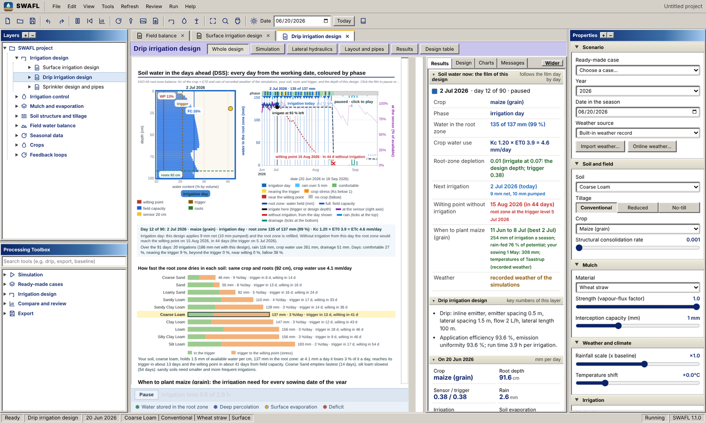

SWAFL: Soil Water Atmosphere Feedback Layout
Coupled water fluxes, pore-scale dynamics, precision irrigation and mulching feedback loops. Author: Naziru Halilu.

SWAFL 1.1.0 online workbenchThe full program in the browser, nothing to install. Download the SWAFL manual (PDF), version 1.1.0, the latest530 pages, 31 MB, opens in the browser: every control, layer, design and equation, with screenshots. Manual of version 1.0 (PDF)The manual of the first release. SWAFL 1.0 online workbenchThe first release, kept as it was. SWAFL web explorerThe simulation engine of version 1.1.0 on one page: every layer, the designs and the irrigation schedule. Repository on GitHubData, papers, code and the desktop program.